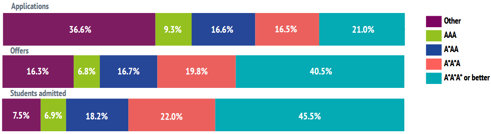

Ultimately: when it comes to school exams, you need to be performing at the top of your game. Firstly, securing top class predicted grades. Then, once the admission process is out of the way, work like the wind to ace your actual exams and meet your offer.

Don't be fooled by the 14.4% of people accepted without an A* - this is more likely to be drastic extenuating circumstances ("our school burned down halfway through the year and most teachers left, I was one of only three students in the school who achieved AAB or higher") than a leap of faith on a promising candidate with lower predicted grades.
If the former is you, more on this in Personal Statement. If the latter, aim for A*A*A*+!
You may wonder what "or better" means - this is for students taking more than three A levels. If you take more than three A levels, there's a good chance your offer will be based on these, e.g. A*A*A*A. Typically this just makes your offer harder to make without substantially boosting your odds... A*A*A* is a lot easier to do if you're not frantically studying for an A in Biology also, and Oxbridge typically doesn't really care about subjects that aren't directly relevant for their qualification. If you think you can manage it, then go for it. If you think it's going to be a stretch, and you want to maximise your odds, it may be wise to reconsider.
In any case - your predicted grades will be on UCAS. For a candidate with three A levels, these basically all have to be A*.
Your actual grades, as we can see above, will need to score close to the A*A*A* threshold too.
IB: You're looking at 42+, with 7s in all your relevant subjects.
AP: 5s across the board is pretty much non-negotiable
Other, less well known systems (like NCEA, in New Zealand, which is what I did) may vary. I'll talk about NCEA because it might shed some light generally:
Because the admissions tutors can't be an expert in every education system, there is some lenience here. In New Zealand, the highest qualification from your high school exams you can achieve is "Excellence Endorsed". This is from achieving the highest grade "Excellence" fairly consistently (between 50-80% of your credits, typically) across your exams. Since it's only a four grade system (Fail/Pass/Good pass/Excellence), this is nowhere near as hard to achieve as 42+ in IB or A*A*A in A levels. Great news! It's easier to look good.
The caveat here is - you'll need to catch up academically to everybody else anyway if you're to stand a chance at interviews or admissions tests. So it's sometimes easier to get a foot in the door, but potentially harder to actually execute it. As a contrast, the Chinese Gaokao is on the whole more difficult than A levels, so Chinese students tend to find admissions tests relatively easier - but interviewing in a second language is really hard, and this step is fatal instead.